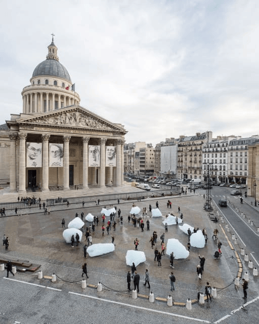
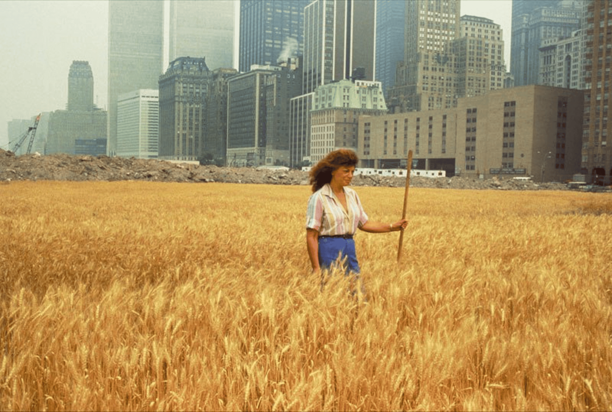
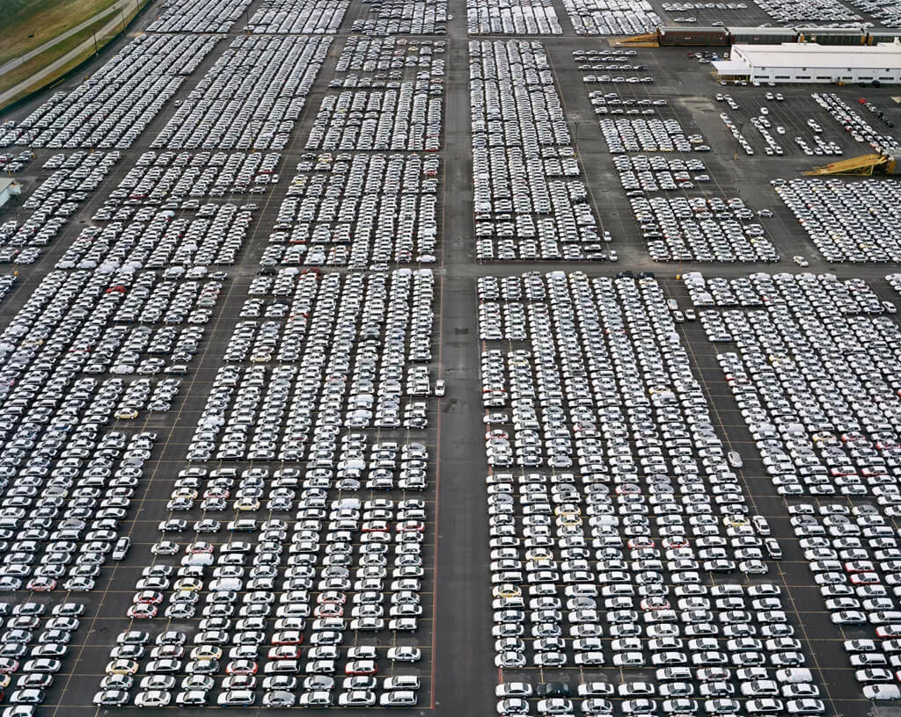
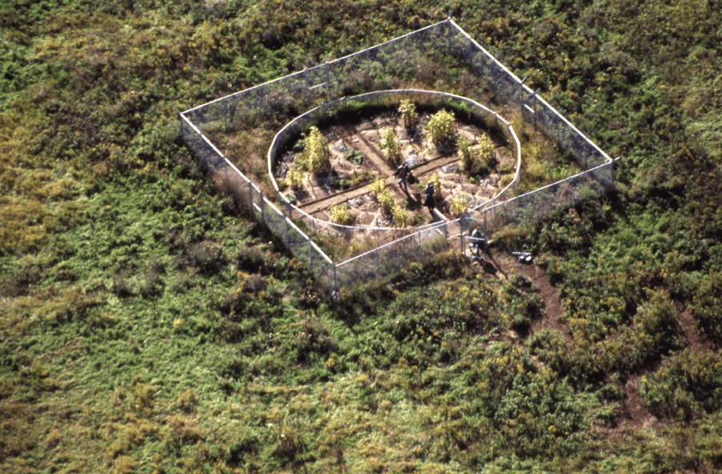
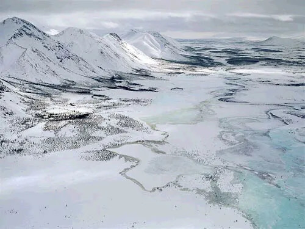
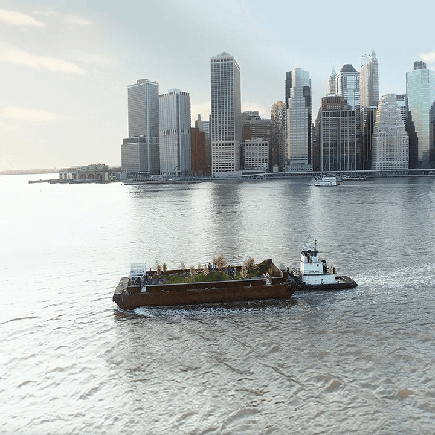
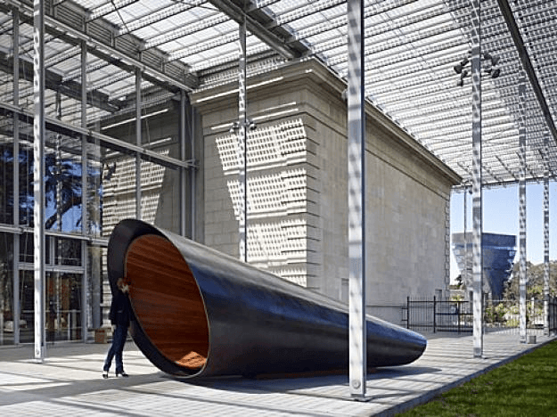

About the Exhibition
Beyond Us is a reflection on the relationship between humanity and the natural world. In a time defined by
the climate crisis, I wanted to curate an exhibition that confronts viewers with the reality that nature
does not depend on us, we depend on it. This exhibition explores the tension between destruction and
resilience, as well as the impact of climate change, environmental degradation, and ecological imbalance.
The climate crisis is often discussed through statistics and policies, yet these frameworks can feel
detached from everyday experience. Through this exhibit, I aim to bridge that gap by bringing together
artists whose works make environmental change visible and immediate. Beyond Us explores the tension between
human progress and environmental vulnerability, revealing how the systems that sustain our lives are
becoming increasingly vulnerable.
What compels me most about this theme is the idea that we are living in a moment of both awareness and
inaction. We know the environment is changing, yet much of that knowledge exists in abstraction. Scientific
reports tell us what is happening, but they rarely make us feel it. Art, however, has the ability to
translate data into experience. It can slow us down and create a space where reflection becomes unavoidable.
What makes art particularly powerful in the context of an environmental crisis is its ability to create
emotional urgency without relying on instruction. Unlike scientific reports, which often require prior
knowledge or interpretation, art can be immediately felt. It creates a sensory experience that allows
viewers to connect with complex issues in a more personal way. I wanted to present works that do not simply
document environmental collapse, but also reveal nature’s quiet resistance.
Through this exhibition, I hope viewers feel a sense of reflection. I want viewers to reconsider humans' relationship with the
environment and recognize their role both as contributors to environmental damage and as potential agents of
change. By experiencing these artworks together, viewers are encouraged to move from passive observation to critical awareness.The goal of this exhibit is to display how artists challenge traditional boundaries between art, science,
and activism. Many of the works in this exhibit engage with nature directly, whether through physical
intervention, documentation, or immersive experience. This blurring of disciplines reflects the complexity
of environmental issues themselves, which cannot be understood through a single lens. By bringing together
artists from different backgrounds and approaches, I aim to create a conversation that reflects the
complexity of the climate crisis.
In selecting the artists for this exhibition, I was drawn to those who create work that operates on both an
emotional and conceptual level. Olafur Eliasson was an essential inclusion because his work transforms
climate change into something physically experienced.“Ice Watch” is a curated installation of large chunks
of ice in front of public urban spaces. As viewers watch the ice melt in real time, they are forced to
confront global warming as undeniable. I enjoyed this piece because it transforms climate change from facts
into a physical reality. As well as resetting the dialogue on climate change, forcing society to move past
its passive role.
Agnes Denes is another ecological artist I was intrigued by. Her ability to confront systems of power
through direct intervention in the landscape was inspiring.“Wheatfield – A Confrontation” (1982) is a
powerful contrast of nature with capitalism and urban development. This artwork features a field of wheat
planted in downtown Manhattan, surrounded by skyscrapers and financial institutions. The simplicity of the
gesture makes it even more powerful, as it interrupts a space typically defined by profit and development.
It suggests that alternative systems are possible, even in unlikely places. Highlighting the absurdity of
prioritizing economic growth and society's misplaced priorities.
I included Edward Burtynsky because of his ability to complicate the way we view environmental destruction.
“Oil Fields” (2001). This photograph captures vast industrial landscapes shaped by oil extraction, viewed
from an aerial perspective. At first glance, the image appears beautiful, almost abstract, with intricate
patterns and rich colors. However, the longer you look, the more unsettling it becomes as I recognize the
environmental damage it represents. I chose this work because it reflects how easily industrial destruction
can be normalized or even admired. It plays an important role in my exhibition by exposing the seductive
nature of industrial impact.
Mel Chin, on the other hand, offers a different perspective with “Revival Field” (1991). This project uses
plants to extract toxic metals from contaminated soil, transforming polluted land into a site of recovery. I
was interested in how this work moves beyond representation and becomes an active environmental solution. It
challenges the idea that art is purely symbolic by demonstrating real-world impact. The use of natural
processes to heal human damage is especially powerful. I included this work because it introduces hope and
possibility into the exhibition.
The inclusion of Subhankar Banerjee was important to me because of his commitment to documenting ecosystems
that are under threat. “Arctic National Wildlife Refuge” (2003). This series captures the fragile beauty of
Arctic landscapes threatened by industrial development. I was drawn to the quiet, almost meditative quality
of these images, which contrast sharply with the urgency of their message. The work highlights ecosystems
that many people will never experience firsthand. It also carries a strong political dimension, advocating
for preservation and protection. I selected this work because it reinforces the importance of environmental
awareness and activism.
In contrast, Mary Mattingly reimagines alternative ways of living in response to the environmental crisis
with her project Swale. New York faces huge food hardship, yet it's illegal to plant food in public spaces.
Mattingly found a loophole and planted produce on a floating barge in the South Bronx. I selected her work
to expand the exhibition into the future, beyond documentation into the realm of possibility. I admire
Mattingly’s ambition and determination to provide access to clean water and local food. I was also drawn to Zaria Forman because of the emotional depth of her work. Her large-scale drawings of
melting ice sheets are incredibly detailed, yet they carry a sense of quiet loss that resonates deeply. They
invite prolonged looking and contemplation, which I see as an important counterpoint to the fast-paced
consumption of images today.
Finally, Maya Lin brings a powerful integration of memory, data, and activism.
Her work connects environmental loss to collective remembrance. “What Is Missing?” (2009) is a multimedia project documents
species extinction and environmental loss through an evolving digital archive and physical installations. I
was drawn to this work because it expands the idea of environmental art beyond a single object and into an
ongoing process of remembrance. I find it especially powerful how Lin combines scientific data with
emotional storytelling, making the information more accessible and impactful. The work encourages viewers to
reflect not only on the present but also on the irreversible consequences of human action. I included this
piece because it reinforces my theme by connecting environmental destruction to memory, loss, and collective
responsibility.
Together, these artists form a network of perspectives that reflect the complexity of our relationship with
the environment. What I ultimately want viewers to take away from Beyond Us is not just an understanding of
the environmental crisis, but a shift in perspective. These works ask us to slow down, to look closely, and
to recognize that the natural world is not separate from us, but deeply intertwined with our existence. By
bringing together artists who approach environmental issues from different angles, I hope to emphasize that
there is no single way to engage with the climate crisis. In the end, Beyond Us suggests that while human
systems may feel dominant, they are ultimately fragile. Nature will continue to adapt, evolve, and persist
long after us.
Artwork
Olafur Eliasson
“Ice Watch” (2014)

This installation consists of 12 large blocks of glacial ice placed in City Hall Square, Copenhagen,
where they slowly melt over time. Allowing viewers to see and even touch the effects of climate change in real time. The melting ice becomes a visual
countdown, emphasizing the urgency of environmental collapse. Eliasson mentions that the main issue with
climate change is that “we are already aware of it.” Art is able to engage with people in ways science
simply can’t, and in this piece, he brought the Arctic to the city. I selected this work because it
powerfully anchors my exhibition in real-world consequences and forces viewers to confront the reality
of environmental loss.
Agnes Denes
“Wheatfield – A Confrontation” (1982)

Wheatfield is a project where Denes transformed a two-acre landfill in lower Manhattan into a thriving
wheat field. I selected this work because of the powerful contrast between nature and the surrounding
financial district. I was drawn to this work because of the irony in the act of growing wheat in such a
major city, which disrupts expectations while challenging ideas of land use and economic priority. What
makes this piece especially impactful is the fact that the land is worth billions, yet it was used to
grow something simple and essential. I included this work because it represents resistance through
quiet, intentional action and questions society’s misplaced priorities.
Edward Burtynsky
“Oil Fields” (2001)

This is a photography series depicting industrialized landscapes. The photographs are striking,
yet they depict landscapes densely packed by industrial activity. In the series of images they are mapped out in a way to show the full life cycle of oil. Burtynsky documents oil
extraction and refinement in scenes of industrial landscapes. Including ways to use oil, its effects on
our everyday lives, and concludes with the destructive power of oil. I selected this work because it
challenges viewers to confront the reality of big oil companies.
Zaria Forman
“Greenland Ice Sheet” series (2012)

This series consists of large-scale pastel drawings
depicting melting glaciers with incredible detail and realism. At first glance, I thought these were
photographs, but learning they were hand-drawn made them feel even more intentional and intimate. The
work captures both the beauty and fragility of these environments, emphasizing how quickly they are
disappearing. I was drawn to the quietness of the images, which contrasts with the urgency of climate
change. I selected this work because it reinforces the theme of environmental fragility while also
highlighting the emotional impact of loss.
Mel Chin
“Revival Field” (1991)

This work represents a shift toward environmental solutions and regeneration. It’s fascinating how
Chin uses plants to extract toxins from contaminated soil, transforming polluted land into a site of
recovery. The project challenges the idea that art is purely symbolic by demonstrating real-world
environmental impact. It highlights the resilience of nature while also exposing the consequences of
human damage. I included this work because it introduces a sense of possibility and shows that
restoration can be a powerful form of resistance.
Subhankar Banerjee
“Arctic National Wildlife Refuge” series (2003)

This is a photography series of untouched ecosystems. His work emphasizes the urgency of preservation and
the importance of bearing witness. He himself a Native American connected with the Indigenous
Gwich’in and Iñupiat communities during his trip to the Arctic. I was interested in how his work
operates
at the intersection of art and advocacy. He uses his platform to portray these areas as homeland,
arguing that protecting the land is essential for the cultural and physical survival of indigenous
communities.
Mary Mattingly
“Swale” (2016)

This floating food forest invites the public to harvest fresh produce for free, challenging systems of
food access and sustainability. I was fascinated by how this work reimagines urban space as a site of
ecological cooperation. It suggests new ways of living that are more aligned with environmental balance.
The participatory nature of the project makes it especially impactful. I included this work because it
expands the exhibition toward future possibilities and collective action. This work strengthens my
exhibition by reminding viewers that environmental loss is not only happening now, but has already been
happening for decades.
Maya Lin
“What Is Missing?” (2009)

This work connects environmental loss to memory and collective awareness. The
project feels like an archive of disappearance, documenting species and ecosystems that are vanishing. I
am drawn to how Lin combines data, storytelling, and visual experience to create something deeply
impactful. The work encourages reflection on what has already been lost and what may still be saved. It
reinforces my theme by framing environmental fragility as both a present and historical condition.